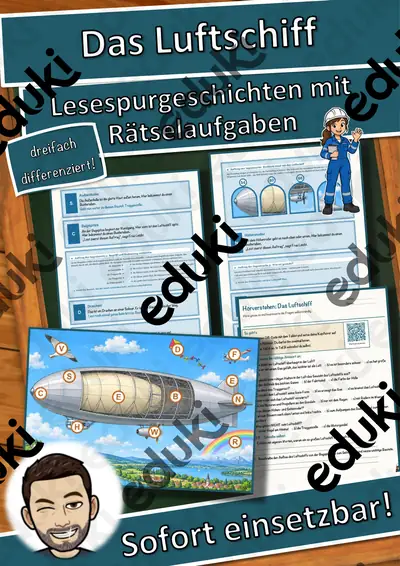
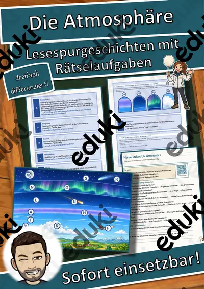

Luft und Atmosphäre: Arbeitsblätter für Klasse 2–7 (Sachunterricht)
Luft ist unsichtbar und doch nachweisbar. Versuche mit Spritzen, Ballons und Gläsern führen zu Luftdruck und Sauerstoff, in höheren Klassen zur Atmosphäre und zur Luftqualität.
Typische Bausteine der Einheit sind Luftdruck, Sauerstoff und Atmosphäre; darauf aufbauend kommen Wind, Luftverschmutzung und Ozonschicht zur Sprache.
In den Lehrplänen der Länder ist das Thema im Fach Sachunterricht verankert, meist in den Klassen 2 bis 7. Die Kinder weisen mit Versuchen nach, dass Luft Raum einnimmt, und beschreiben die Schichten der Atmosphäre.
Für den Einstieg in Luft und Atmosphäre bieten sich Aufgaben zu Luftdruck an, zum Üben solche zu Sauerstoff und Atmosphäre, zur Wiederholung vor einer Lernkontrolle ein Blick auf Ozonschicht. Die Lösungen liegen bei, sodass im Unterricht niemand nachschlagen muss. Leistungsstarke und schwächere Lesende erhalten über die Lesespurgeschichten Texte in drei Stufen.
7 passende Materialien stehen bereit, etwa Das Luftlabor, Das Luftschiff und Die Atmosphäre. Vertreten sind 3 Lesespurgeschichten und 4 Lückentexte mit Hörverstehen; die Stufen reichen über Klasse 5–8. Ein umgedrehtes Glas im Wasserbecken, in dem ein Taschentuch trocken bleibt, ist ein einfacher Beweis für Luft.
Das gehört zum Thema
Passende Arbeitsblätter und Materialpakete

Das Luftlabor – Lesespurgeschichte mit Rätselaufgaben (Klasse 5)

Das Luftschiff – Lesespurgeschichte mit Rätselaufgaben (Klasse 8)

Die Atmosphäre – Lesespurgeschichte mit Rätselaufgaben (Klasse 8)

Ozon Lückentext mit Wortspeicher Hörverstehen und Suchsel

Luftschiff Lückentext mit Wortspeicher Hörverstehen und Suchsel

Luft Lückentext mit Wortspeicher Hörverstehen und Suchsel

Atmosphäre Lückentext mit Wortspeicher Hörverstehen und Suchsel
Häufige Fragen
Für welche Klassenstufe passen die Arbeitsblätter zu Luft und Atmosphäre?
Passend sind Klasse 5–8. Von den 7 Titeln wenden sich die meisten an Klasse 5, einige lassen sich differenzierend auch in benachbarten Stufen nutzen.
Welche Inhalte decken die Materialien zu Luft und Atmosphäre ab?
Inhaltlich reicht die Auswahl von Luftdruck über Sauerstoff und Atmosphäre bis zu Luftverschmutzung; Details stehen bei den einzelnen Materialien.
Wie setze ich Luft und Atmosphäre im Unterricht ein?
Ein umgedrehtes Glas im Wasserbecken, in dem ein Taschentuch trocken bleibt, ist ein einfacher Beweis für Luft. Danach genügt meist ein Material als Einstieg und eines zum Üben.
Mehr Material nach Fach und Klasse
Verwandte Lehrplanthemen
- Bauernhof und Nutztiere (Sachunterricht, Klasse 1–4)
- Berufe und Berufswahl (Sachunterricht, Klasse 1–10)
- Dinosaurier und Urzeit (Sachunterricht, Klasse 1–5)
- Geld und Konsum (Sachunterricht, Klasse 2–10)
- Gesunde Ernährung (Sachunterricht, Klasse 1–8)